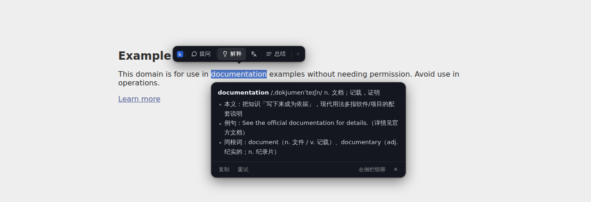

Reading pages
"Reading" is browsa's foundation: one click on 📎 brings the page you're on into the conversation. This page covers what it reads, how, and the other ways in besides 📎.
📎 Attach the current page
Click 📎 next to the composer and the current tab is attached to the conversation. The default Auto mode picks its reading strategy in a cascade: clean article text first (Readability), falling back to the structured DOM tree, then to full page text. You never choose — the note above the composer tells you which reading was used.
One attach, lasting context: every following turn carries the page content with it, until you clear history or re-attach a different page.
📷 Screenshot mode
Sends the visible area of the tab as an image to a multimodal model — for questions plain text can't answer, like "which curve rises here". Toggle with Ctrl+/ or pick it in 📎's mode menu.
Select text: inline explain / translate
Select text on a page and a floating toolbar appears on release: Ask · Explain · Translate · Summarize.
- Explain and Translate answer in place: a streaming card opens right next to the selection — pronunciation and examples for a single word, no side panel needed, read and move on;
- Ask and Summarize ride into the side panel automatically — they start a conversation;
- right-click → browsa › Ask / Explain / Translate / Summarize sends all four to the panel.

None of these need 📎 first.
Images
Drag an image into the composer or paste a screenshot with Ctrl+V (multimodal models only — GPT-4o, Claude, and other vision models).
PDF: parsed on your machine, figures included
Attach a PDF — or open a page that turns out to be one — and no mode picking is needed:
- Parsing happens entirely in your browser (WASM + pdf.js); the file's bytes never leave your device;
- Tables, headings, and multi-column layout are reconstructed — the model reads structure, not scrambled text;
- Figure regions are cropped out and sent as images to vision models, paired with their captions — the model can actually see Figure 1.

GitHub file pages
On github.com file pages, browsa fetches the raw source from raw.githubusercontent.com directly — Markdown and code keep their structure instead of the rendered page.
Deep extraction on known sites
For the sites below, browsa observes the requests the browser itself makes and reads the page's already-loaded structured data — subtitles, comments, note text — rather than guessing. No re-authentication, nothing sent to third parties.

Pages not on the list work too — via the Auto cascade, just not as deep.